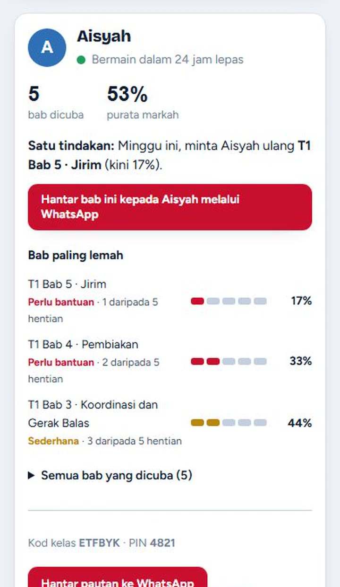

Sains · Matematik · Sejarah KSSM
Naik satu bab demi satu bab.
Murid berlatih sambil bermain. Guru dan ibu bapa nampak bab yang sudah dikuasai dan bab yang masih lemah.

Paparan ibu bapa sebenar. Nama dan data ialah contoh rekaan.
Ibu bapa
Anak kata “dah faham”. Kini ibu bapa boleh pastikan.
Anak NaikGred
Markah setiap bab, terus di telefon.
Anak menjawab soalan seperti bermain permainan. Ibu bapa melihat bab yang Cemerlang dan bab yang Perlu bantuan, dengan satu cadangan untuk minggu ini.
- Sehingga 5 anak dalam satu akaun
- Sains, Matematik dan Sejarah, Tingkatan 1 hingga 5
- Sains DLP (Bahasa Inggeris) Tingkatan 1 hingga 3
- RM32 setahun sekeluarga, harga Early Bird hingga 31 Disember
Contoh paparan. Data rekaan.
Guru
Jejak TP. Kerja PBD jadi ringan.
Murid bermain di telefon. Tahap Penguasaan (TP) direkod terus mengikut DSKP, bab demi bab, dan sedia untuk pelaporan PBD.
- Bab 1 dan 2 bagi setiap tingkatan
- Rekod TP murid mengikut DSKP
- Kelas demo untuk dicuba dahulu
- Menengah rendah (Tingkatan 1 hingga 3) atau Menengah atas (Tingkatan 4 dan 5)
- Semua bab dibuka, 5 kelas dengan 60 murid setiap kelas
- RM23 dikunci setiap tahun selagi langganan tidak terputus. Mulai 1 Januari 2027, RM59 setahun
Dibina bersama guru yang masih mengajar.
Tepat mengikut DSKP
Setiap soalan dipetakan kepada standard pembelajaran yang digunakan di sekolah.
Data yang boleh diambil tindakan
Bukan sekadar satu markah keseluruhan. Bab yang lemah dikesan, dan satu langkah seterusnya dicadangkan.
Data murid dilindungi
Tiada gambar, e-mel atau nombor telefon murid disimpan. Data tidak dijual kepada sesiapa.